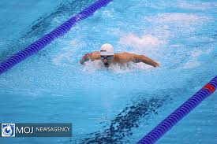

Butterfly is a stroke where the swimmer propells themselves foreward face down, with both legs moving simultaniously and an up-down "dolphin" kick with the legs. It requires consistent timing, strength and fitness as it is one of the hardest and most physically demanding strokes.
